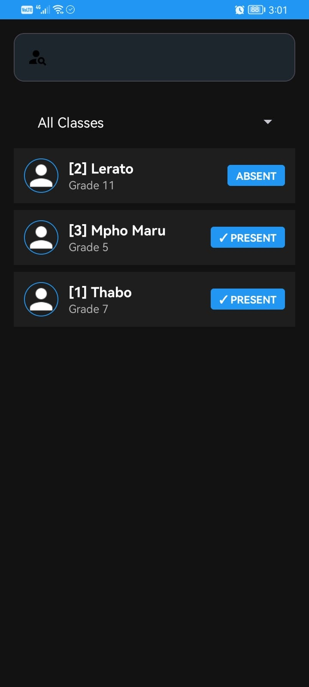

Track learner attendance and payments, monitor progress, and share updates with parents — even without internet.
Many tutors still use paper registers or scattered notes.
This makes it hard to:
- Track who attends consistently
- Know which learners need attention
- Show parents real progress
TutorPulse is a simple mobile app that helps tutors:
- Mark attendance in seconds
- See each learner’s attendance percentage
- Check when a learner last attended
- Export attendance to share with parents
- Track learner payments
No spreadsheets. No complicated systems.
Already being used by tutors to replace paper registers and improve communication with parents.
Key features
- Works fully offline (no internet needed)
- Simple Tutor mode for marking attendance
- Admin mode for managing learners
- Export attendance reports (CSV)
- Track learner payments
- Built for real tutoring environments
How it works
- Add your learners
- Mark attendance during sessions
- View progress and export when needed
See TutorPulse in action



Get TutorPulse
Works on any Android phone — even budget devices (R1,000+).
No login • No internet • No account required
Download the app and start tracking attendance today.
Download (APK)Want a quick demo or have questions?
Feel free to contact me.
Contact number: 068 268 3275
Email address: tshokolontho3@gmail.com